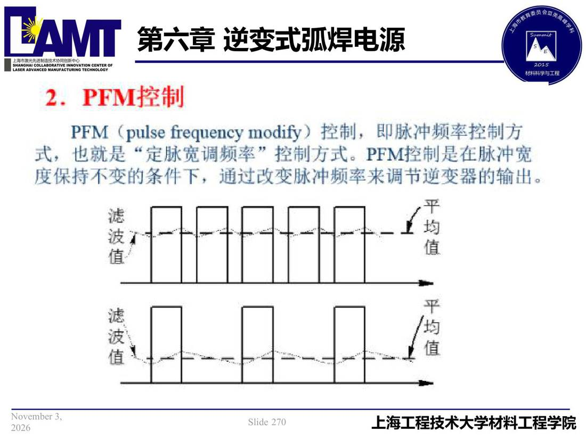

06 第6章 逆变式弧焊电源/p270 PFM （pulse frequency modify）控制
p270 PFM （pulse frequency modify）控制
📄 原文：📄 弧焊电源 课件（PDF 第 270 页）（幻灯片 270/273；PDF 第 270 页）
PFM （pulse frequency modify）控制

讲义原文
本页在课件中是纯图文版式（无文字层），内容以页图与下面的 OCR 文本为准。
页面文字（OCR 机读，可能有错字，以页图为准）
2.PFM控制 PFM （pulse frequency modify）控制，即脉冲频率控制方 也就是“定脉宽调频率”控制方式。PFM控制是在脉冲宽 度保持不变的条件下，通过改变脉冲频率来调节逆变器的输出。